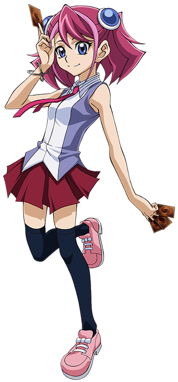
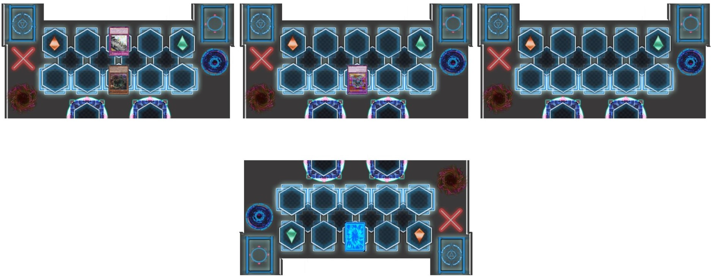
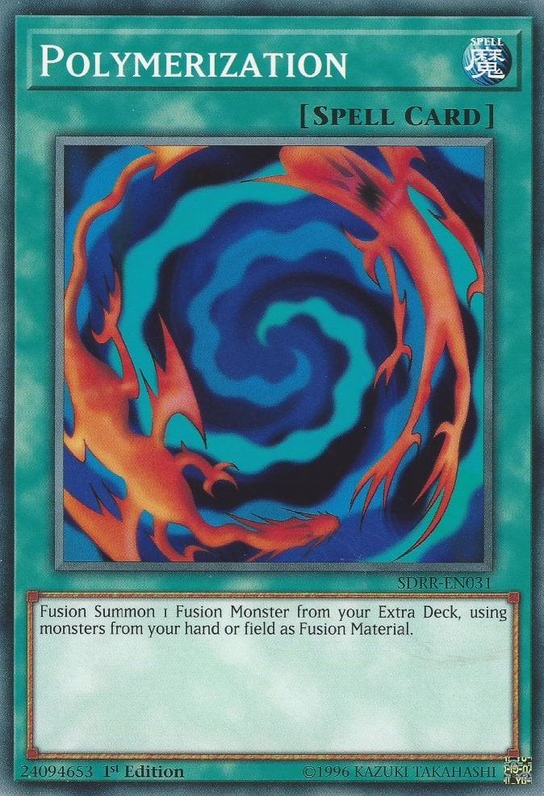

complained as he
continued to eat. It was a sunny Saturday morning and Yuya was enjoying a breakfast composed of scrambled eggs (all white), wheat toast, fresh fruit, and milk.
complained as he
continued to eat. It was a sunny Saturday morning and Yuya was enjoying a breakfast composed of scrambled eggs (all white), wheat toast, fresh fruit, and milk.
Yuya: I told you guys, I'm fine! The doctor said he couldn't find anything wrong! No need to worry so much!
Sakaki Yuya complained as he
continued to eat. It was a sunny Saturday morning and Yuya was enjoying a breakfast composed of scrambled eggs (all white), wheat toast, fresh fruit, and milk.
Yuzu: After what happened yesterday, we have every right to be worried!
Yuzu Hiragi argued. Sitting with
her and Yuya at his home that morning were Gongenzaka Noboru,
a big guy wearing a white uniform and heavy sandals, Yuzu's father Shuzo Hiragi ,
and three smaller children.
,
and three smaller children.

They were a small red haired girl named
Ayu Ayukawa ,
a small chubby boy named Futoshi Harada,
and a small blue haired boy named Tatsuya Yamashiro
,
a small chubby boy named Futoshi Harada,
and a small blue haired boy named Tatsuya Yamashiro .
They, along with Yuya's mother, a blonde woman named
Sakaki Yoko
.
They, along with Yuya's mother, a blonde woman named
Sakaki Yoko stared at Yuya with great concern.
stared at Yuya with great concern.
Yoko: I agree with Yuzu. From what I've been told, we can't take any chances. Hence, your very heart healthy meal.
Yoko scolded. After her husband's , disappearance, she didn't want anything to happen to her precious son.
, disappearance, she didn't want anything to happen to her precious son.
Yoko: After speaking with Shuzo, and he agrees with me on this, I've decided that you should stop Dueling for a while. Take it easy for at least a week.
Yuya spat milk out of his mouth at the news, accidentally spraying the orange spiked haired Shuzo in the face.
Yuya: A week?! Mom, you gotta be kidding?! I'm telling you, nothing's wrong with me!
Yuya protested.
Shuzo: Yuya, we were all there, including myself. Seriously, you're lucky we didn't have to take you to the emergency room! If it wasn't for our new friend here, who knows what might've happened!
Shuzo retorted heatedly.
They all turned to the newest occupant in the Sakaki home. A boy, around sixteen, who wore a strange pyramid around his neck, didn't exactly like being suddenly in the spotlight. He smiled and tried not to look embarrassed.
???: It was nothing, really. I'm just glad Yuya is going to be alright.
Yoko walked over to the boy and hugged him tightly, nearly making him suffocate.
Yoko: Nothing? You saved my son's life! You're welcome in my home anytime... um, what's your name again?
Yoko asked.
Yugi: It's Yugi, ma'am.
Muto Yugi .
.
Yuya: Yeah. Thank you for helping me back there, Yugi.
Yuya said after swallowing a bit bite of toast.
Yugi: You're more than welcome, Yuya.
After that, Yugi thought back to the "incident" with Yuya that everyone was talking about...
Flashback
In the dueling stage at You Show Duel School,
Yuya had just won a Duel against a new Duelist who said he wanted to be Yuya's "apprentice". That was a young light blue haired boy named
Sora Shiunin .
He appeared to be a gifted Fusion User. As everyone came out to to see them, Yugi stood watching the whole thing from just inside the entrance to the dueling area.
.
He appeared to be a gifted Fusion User. As everyone came out to to see them, Yugi stood watching the whole thing from just inside the entrance to the dueling area.
Yuya: Now that I've won the duel, you can stop follow-
No sooner had Yuya said her sentence than Sora suddenly started to laugh.
Sora: Dueling with was cool, really cool Yuya!
Yuya: Huh? And why are you using my first name?
Sora: Well, I can't be your apprentice right? Then, I've decided to be your friend, Yuya!
Sora said happily. This confused Yuya.
Yuya: Excuse me?
Sora continued to smile.
Sora: That Duel was so much fun! I'd love to duel you as my friend again!
Yuya however, looked annoyed. After a brief exchange with Shuzo about getting the paperwork for Sora to officially become a new student at the school, Yuya started to ask Sora a few questions.
Yuya: Say Sora. If you were never at LDS, then where did you learn to Fusion Summon?
From his hiding spot, Yugi could tell Sora had no intention of telling his new "friend" the truth.
Sora: Aww, don't bother with the details. It's really not that important.
Yugi: Well, that's definitely not true.
Yugi said to himself.
Sora: We are friends now, right Yuya?
Sora asked. Yuya became aggravated.
Yuya: Hey! Come on! Don't say things like that! I never actually said we could be... Gah !
Just then, something horrific had happened. Yuya grabbed his chest, where his heart was, and began screaming as he fell to his knees. His screams completely freaked
out Sora, who wasn't prepared for something like this. Everyone instantly ran to Yuya, who continued to scream while holding his hand over his heart. Yugi himself was
very shocked by this too. He then noticed just before he closed his eyes from the pain, Yuya's eyes began to glow a
faint dark red .
.
Yugi: Mou Hitori no Boku ! What's wrong with Yuya?!
(Mou Hitori no Boku = My other me)
???: Nothing good! Yugi, I sense something from inside Yuya, something dark! It's energy is harming him! It could only be one thing... !
Said Atem, an ancient spirit that resided within the Millennium Puzzle Yugi was wearing.
Yugi: You're right! It has to be him! Is there anything we can do to help Yuya?!
Yugi asked in panic.
Atem (Yami Yugi): I might be able to pacify the darkness, but I'll need you to help me connect to Yuya!
Atem instructed. While the two of them conversed, Yuya's terrible screaming continued. This was scaring everyone around.
Yuya: Gaaaaaaaaahhhhhhhhhh !!!
Yuzu: Yuya! What's wrong?! What's the matter?! Talk to us, Yuya!
Yuzu begged, but Yuya's answer was more screaming.
Yuzu: Dad! Is there something we can do?!
Ayu: Mr. Hiragi, please do something!
Ayu yelled, hating seeing what was happening. At this point, Yuya fell back on the ground, and his pain became worse. He was laying there, screaming like he was dying. Yuzu started to cry, wishing there was something she could do.
Shuzo: Call the hospital! We need to... !
Shuzo started, when help unexpectedly showed up.
Yugi: I can help him!
Yugi declared as he ran out toward the screaming Yuya. The group gasped when he approached, none of them having seen him before.
Sora: Who the heck are you?!
Sora asked in surprise. Yugi ignored him as he knelt beside Yuya.
Yugi: I can help Yuya! Everyone, please stay back! I can do this!
Yugi ordered. They all hesitated, but they backed up a bit nonetheless.
Yuzu: What can you do?
Yuzu asked, fearful for her closest friend's life. Yugi placed a hand over Yuya's chest, while holding his Puzzle with the other. He didn't take his eyes off Yuya as he answered.
Yugi: Trust me!
Was all he said as he closed his eyes. Yuzu, her father, and the others then watched the stranger try to help their friend. What they couldn't see was that eye on the Millennium Puzzle glowed, and that glow faintly traveled through Yugi's hand touching Yuya and then covering the boy himself. Within seconds, Yuya's screaming finally came to a stop before he passed out from the pain.
Everyone stood silent, waiting to hear the results of the stranger's efforts. After a quiet but intense moment, Yugi looked up at them and smiled with a nod. He then backed off as they ran back to Yuya. Shuzo immediately check the boy's condition. He sighed with relief.
Shuzo: Yuya's unconscious. His pulse has slowed, but I think he's going to be okay. Still, we should get him to a doctor just to be sure. Yuzu, call Yoko. I'll call the hospital.
Yuzu: Right!
YYuzu replied as she dialed the number of Yuya's mother. Yugi had stood back to give the group some space. Once the calls had been made, they all turned to Yugi in amazement.
Yuzu: What did you do? How did you help Yuya?
Yuzu asked. Yugi already had an answer ready.
Yugi: It's an old healing method passed down in my family for generations. I just never got the chance to use it much.
He hoped he sounded convincing enough. Before he knew it, Yuzu ran to Yugi and hugged him.
Yuzu: Thank you! Thank you so much! I almost started to think that...
Yuzu didn't want to finish what she thought. Yugi blushed a bit when Yuzu released him.
Yugi: I'm relieved I was there to help.
Sora: Who are you, mystery healer?
Sora demanded again.
Tatsuya: Yeah! What's your name Mister?
Tatsuya asked.
Shuzo: Please tell us, young man.
Shuzo insisted. Yugi smiled as he introduced himself.
Yugi: My name is... Muto Yugi.
Flashback End
After the incident, Yuya was taken to the hospital to be looked over. To everyone's astonishment, the doctor could not find a single problem with Yuya's heart. He said the boy seemed as healthy as he could be, though they all knew something had caused Yuya's painful outburst. And of course, no one believed Yuya pretended to be ill; that wasn't something he would do. Still, the doctor released Yuya later in the afternoon and just advised his mother to keep a close eye on him and made sure he did nothing too strenuous. Yugi was glad Yuya was fine, at least for the time being. As Yuya continued to argue with everyone about his condition, Yugi conversed with his unseen partner.
Yugi: Thanks Atem. You're the real reason Yuya is okay now.
Yugi said, but his friend disagreed.
Atem (Yami Yugi): No Aibou (Aibou = Partenaire), it was a team effort. We both helped Yuya. I won't stand here and take all the credit. Besides, I'm much more
concerned about what caused Yuya's pain in the first place.
Atem said. Yugi understood.
Yugi: It has to be
Zarc . He was attacking Yuya from the inside, but why? Yuya hasn't merged with any of his counterparts from the other dimensions.
. He was attacking Yuya from the inside, but why? Yuya hasn't merged with any of his counterparts from the other dimensions.
Yugi stated.
Atem (Yami Yugi): I do not know. We need to discuss this with the others when we meet up with them. Perhaps something happened on one of their missions that
triggered the incident. Remember Yugi, whatever Zarc does to one of his fragments will surely affect the others.
The spirit said with certainty.
Yugi: Agreed. I just hope it doesn't happen again.
Atem (Yami Yugi): In the meantime, we still to need to focus on our own mission.
Atem pointed out.
Yugi: Yeah. So far, Academia hasn't tried to capture Yuzu yet. But I have a feeling they may not wait much longer.
Yugi surmised. Atem nodded.
Atem (Yami Yugi): It might happen anytime now. Sora's recent disappearance could be a sign that they are finally going to make their attempt.
Later, just before Yuya was taken to the hospital, Sora suddenly said he had to use the bathroom to wash the sweat off him for worrying about his new friend's health.
Yugi noticed that just before Sora told everyone this, he took a quick peek at his Duel Disk and looked briefly surprised before putting on an innocent face. While the others weren't looking, Yugi secretly followed Sora. He waited until Sora went inside and closed the door before approaching it himself. As silently as he could, he opened the door just enough to see Sora push a button on his Duel Disk and vanish in a bunch of blue particles. He didn't seem to notice Yugi watching him just before he left.
Nobody else knew where Sora went after never coming back from the bathroom. No one had seen him since then. They, especially Yuzu, felt offended that Sora would ditch Yuya like that right after saying he would be his friend. Yugi and Atem both knew the real reason.
Atem (Yami Yugi): Sora must've gone back to Academia. From the reaction he had earlier, it seemed like he was ordered to return as soon as possible. If that was the case...
Yugi: Then
Akaba Leo has decided not to wait anymore to get his hands on Yuzu.
has decided not to wait anymore to get his hands on Yuzu.
Yugi concluded.
Atem (Yami Yugi): Exactly. We need to be prepared for whatever plan Leo has in mind. No matter what, we CANNOT let him succeed.
Atem declared, with Yugi in complete agreement.
Yugi: Definitely not ! We will certainly not let him get his hands on Yuzu !
It was then that Yugi noticed that someone was trying to get his attention.
Futoshi: Hello? Earth to Yugi-nichan! You in there?
Yugi ended his chat with Atem to look around at the group staring at him. He saw that it was Futoshi who was trying to get his attention.
Futoshi: Weren't you listening? I was asking you something.
Yugi chuckled embarrassingly.
Yugi: Oh, uh sorry about that. Just spaced out for a bit. What were you saying, Futoshi?
The younger child snorted.
Futoshi: I was asking you what that thing around your neck is.
He said as he pointed at Yugi's Puzzle. Yugi looked to see everyone was curious about it.
Yuya: Yeah Yugi, what is it?
Yuya asked.
He decided to give them the basic story, not including anything "special". He held it up so that everyone could see it better.
Yugi: This is called the
Millennium Puzzle . It was a gift from Jii chan
(trad: Jii-chan = Grandpa) when I was younger. He found it an old temple underground in a faraway place back before I was even born. When he gave it to me, it was
in a small golden box in over a dozen pieces. Believe it or not, it took me eight whole years to put it together.
. It was a gift from Jii chan
(trad: Jii-chan = Grandpa) when I was younger. He found it an old temple underground in a faraway place back before I was even born. When he gave it to me, it was
in a small golden box in over a dozen pieces. Believe it or not, it took me eight whole years to put it together.
Yugi explained, stunning them all.
Yuzu: Eight years?
Yuzu said in surprise.
Gongenzaka: That is some steadfast determination you have there, Yugi. I respect that.
Gongenzaka stated proudly.
Yugi: Thanks. It did take me a long time, but it was worth it.
Yugi said happily.
Yuya: How so?
Yuya asked. Yugi frowned a bit from the question.
Yugi: Well, before I put the Puzzle together, I was very shy, timid, and had trouble making friends. A few people actually picked on me.
Yugi said, remembering the days before he completed the Puzzle.
Yuzu: That's awful.
Yuzu said with sorrow.
Yoko: People can be so cruel at times.
Yoko said, who then eyed Yuya as the boy nodded.
Yuya: I know how you feel. People bullied me all the time too. I can see where you came from. But how did completing the Millennium Puzzle change things for you?
At this, Yugi smiled.
Yugi: Well, here's another surprise for you guys. One of the people that bullied me... actually ended up becoming my best friend.
This made them all gasp.
Ayu, Futoshi et Tatsuya: You're kidding!
Said all three younger kids at once.
Yugi: Nope. It's true. I was almost done putting the Puzzle together when he took my last piece and tossed it in the river. Later at school, he and a friend of his
were getting beat up by an worse bully. I actually stood up to him and defended the other two guys, even though that earned myself a pretty good beating too. After
seeing what I've done, even though they hadn't been kind to me, they decided to change and become friends with me. Then the one who became my best friend dived in
the water and retrieved my last piece of the Puzzle. We've been close friends ever since. So you see, my Puzzle actually helped give me my very first friends.
Yugi revealed.
Everyone was both amazed and touched by his story. Yuya smiled as he held the
pendant around his neck that his own father gave him.
Yuzu actually shed a tear or two as she held a hand over her heart.
around his neck that his own father gave him.
Yuzu actually shed a tear or two as she held a hand over her heart.
Yuzu: Yugi.
She said softly. Her father didn't show quite as much restraint as he balled his eyes out.
Shuzo: That's the most touching story I've ever heard! I cannot contain the happiness it gave me!
Yuzu then felt embarrassed herself.
Yuzu: Dad, get a hold of yourself!
She said as she hit him with her paper fan. This got everyone laughing, including Yugi. This actually felt good, laughing with some good people. Still, he knew things would get pretty bad soon if he and Atem were right about Leo Akaba's plan to take Yuzu was all set...
After breakfast, everyone left Yuya's house. As the gang went their separate ways, Yuzu told her dad she was going to buy something for Yuya to cheer him up. Not being able to Duel for a week would drive him crazy before long. Shuzo agreed to the suggestion.
Shuzo: What do you plan to get him?
He asked as they walked. Yuzu thought for a moment when an idea hit her.
Yuzu: I'll get him a new Deck box, one that has
“Sky Magician ”
on it. It was just released recently.
She knew it would be the perfect gift for Yuya.
Shuzo: Alrighty then! I'll see you at home later Yuzu!
Shuzo said as he headed off, while Yuzu headed to the store where she saw that new Deck box. Unknown to her, Yugi kept on her tail, albeit discretely. He had to make sure Yuzu didn't see him or things would get awkward and complicated. Yugi then hid behind a nearby tree as Yuzu entered the store. As he hid himself completely, he had Atem do the watching since no one could see him. At that instant, he saw something that put him on the alert.
Atem (Yami Yugi): Aibou, look.
Yugi peaked around the tree and gasped. Sora had returned and appeared to be waiting outside the store. He looked extremely anxious and constantly turned his head in different directions, like he was keeping an eye out for someone.
Yugi: Sora-kun's back! Is he waiting for Yuzu to come out? Has he been ordered to capture her?
Yugi asked, nervous now himself.
Atem (Yami Yugi): If he does try something, we have to be ready to step in.
Atem replied, wanting to stop the younger boy if things escalated. A couple of minutes later, Yuzu finally came out with a bag carrying her gift for Yuya. She was both surprised and angry when she saw Sora.
Yuzu: Sora?! Where have you been?! None of us could find you anywhere! I'm shocked that you took off like that, after what happened with Yuya! And you said you
wanted to be his friend! You should be ashamed of yourself after leaving... !
She wanted to rant on the boy further, but said boy had cut her off.
Sora: Yuzu, I'm sorry! I wanted to stay with Yuya, really! I didn't want to leave! So how is Yuya doing?
Sora replied, quickly asking for his new friend's wellbeing. Yuzu huffed, placing her hands in her hips.
Yuzu: He's fine, thanks to Yugi. Now why did you leave the way you did?!
Yuzu demanded in outrage. Sora nearly broke the lollipop he had in his teeth, his anxiousness increasing. Sora's answer surprised not only Yuzu, but Yugi and Atem as well.
Sora: I just... got a call from my home. I had to take it, and I couldn't be seen by anyone, not even by you and Yuya. I just found out that... that you're in
danger! I came back to save you!
Sora said, shocking the girl.
Yuzu: I'm in danger? What are you talking about?
Sora: Someone really bad is coming here soon! He's going to kidnap you! I just couldn't let that happen! We have to run, now!
Sora yelled as he grabbed Yuzu's hand and tried to get her to run with him, but she resisted as she pulled her hand away.
Yuzu: Sora, tell me what this is about! Who's wanting to kidnap me?
She asked. Sora sighed.
Sora: Please Yuzu! You have to trust me! I promise, I'll tell you everything later and I won't run out on you and Yuya again! But right now, we need to go!
Yuzu saw the worry and panic in Sora's face. She could tell that he really was concerned for her. Plus, when Yugi told her to trust him to help Yuya, he stayed true to his word. She then decided to give Sora that chance too.
Yuzu: Alright. Where are we going then?
Yuzu finally asked.
Sora: Not back at your house! That would be the first place he'd look for you! I know somewhere much better to hide! Follow me!
He then took Yuzu's hand again, this time she didn't pull it away and ran off with the younger boy. Above them, on the roof of the store,
Dennis watched the whole exchange between them and sighed.
watched the whole exchange between them and sighed.
Dennis: Well, this is disappointing. The Professor did say someone here would try to protect this dimension's bracelet girl, but I didn't guess it would be Sora
Shiunin of all people. I better let "him" know of their movements, and then meet up with
Yuri to lead him in their direction. If this plan works, Yuzu will be at Academia in no time.
to lead him in their direction. If this plan works, Yuzu will be at Academia in no time.
He then jumped from rooftop to rooftop to not lose sight of the pair. Below, on the ground, he failed to notice the other pair watching. Once he was out of sight, Yugi began to run too.
Yugi: That was Dennis McField! He's been spying on Yuzu, like we were! Do you think noticed me?
Yugi asked.
Atem (Yami Yugi): I don't think so. We've been careful to avoid being seen in the same place as Yuzu. I'm sure Dennis is not aware of our presence here.
Atem answered confidently.
Yugi: I hope so! But what was up with Sora? Is he really trying to protect Yuzu? Or is it all part of an act to kidnap her?
Atem (Yami Yugi): I doubt it. I could sense no deception from Sora's thoughts and his emotions weren't negative. I felt he really does want to protect Yuzu. Besides, if
Sora really wanted to take her to Academia, he would have used the Dimension Move function on his Duel Disk to send them both there the moment she met up with him. The
only way to know for sure is catch up to them.
Atem suggested.
Yugi: Okay! Then let's catch up!
Yugi declared as he headed off in the same direction Yuzu and Sora ran, hoping he would be there to save her in time...
As he ran with Yuzu beside him, Sora kept thinking back to the conversation he overheard about her. The conversation that drove him to try to keep her out of the Professor's clutches...
Flashback
After having his memories examined, Sora walked in the hallway to think. He still hadn't gotten over Yuya's unexpected burst of pain. He was actually grateful that Yugi guy showed up when he did, or Yuya might have actually died. He wondered just how the new boy in town was able to save Yuya.
Sora then started feeling bad that he left his new friend's/classmates in such a rush. He really wanted to stay by Yuya's side until he felt better. He then decided to talk to the Professor about returning to Standard. Once Sora got his permission to go back, he'll make a beeline to the hospital there. Just as he made it to the throne room, he stopped just before entering when he heard the Professor talking to someone about Yuzu. Curious, he stood by the door and eavesdropped.
???: So, that's my new target in Standard, Professor?
Said a young man that Sora couldn't see.
Leo: Yes, Yuri. According to Sora's memories, her name is Yuzu Hiragi. She is very important to the Arc Area Project. I need you to go and capture her.
Leo Akaba ordered. Sora was shocked by what he had heard.
Sora: The Professor wants Yuzu captured?! Why?!
Sora thought in alarm. What put him even more on edge was the fact that the Professor was sending Yuri to do the job. Sora had never met Yuri, nor had he actually seen him. From what he heard, however, Yuri was not someone to mess with. He also heard that most of Academia's staff were nervous around him.
Yuri: That might be a problem, if the others were any indication.
Yuri said cautiously.
Leo: I've already made preparations so that you will not fail this time. I have complete confidence that by the end of the day, Hiragi Yuzu will belong to me.
Leo said firmly, with Yuri giving a low chuckle.
That did it. Sora wasn't going to ask for permission now; the Professor would just flat out refuse. Plus, he would want to know why he asked. No, he had to return to the Standard Dimension immediately and hopefully find Yuzu first. Making sure no one was watching, Sora tapped on his Duel Disk again and was gone within seconds.
Next thing he knew, he stood just outside You Show Duel School. He then raced around the area, looking frantically for Yuzu. Finding no one, he headed to the hospital where Yuya would have been taken too. He hoped he would find her there. On the way, he actually bumped into Yuzu's father.
Shuzo: Oh, Sora! There you are! Everyone's been wondering where you disappeared to...
Sora: Mr. Hiragi! Please tell me! Do you know where Yuzu is?
He asked hurriedly. Surprised by the urgency in his voice, Shuzo answered at once.
Shuzo: Well... As we left Yuya's house earlier, Yuzu told me she was going to a nearby store to buy a cheer up gift for Yuya.
Sora: Where exactly?
After Shuzo gave him directions, Sora dashed to the store before the older man could ask any questions. He prayed that Yuzu would still be there. As fate would have it, he arrived at the store just to see Yuzu step inside. He sighed inwardly, glad that Yuri hadn't gotten to her yet. He then decided to wait impatiently outside until Yuzu came out again.
Flashback End
Sora and Yuzu continued to run until they arrived at an empty warehouse just outside Maiami City. They went inside and hid behind some crates. After resting for a bit, Sora took a quick look around out the window.
Sora: Okay, I think no one's followed us here.
He said quietly.
Yuzu: I should hope not. Now will you please explain yourself.
Yuzu said, annoyed that she still didn't know anything. Sighing, Sora looked up at her.
Sora: Yuzu, I wasn't really... honest about why I came here in the first place.
He started. Yuzu didn't like the sound of that.
Yuzu: Meaning what?
Sora fidgeted for a bit, knowing his recent actions could be seen as treason. Still, he couldn't protect Yuzu without her knowing.
Sora: Remember me telling Yuya that Fusion Summoning was common where I'm from and I didn't tell him where that place was?
Yuzu nodded, saying she remembered that.
Yuzu: What's that got to do with anything?
Sora sighed again.
Sora: That place I came from... it's nowhere near here. It's a place no one here has heard of.
Yuzu: Where is that?
Yuzu asked further, curious about where Sora was going with this and what it had to with someone's plan to capture her.
Sora: I came from a Dueling school, called Academia, where Duelists learned how to Fusion Summon... among other things. The man in charge of the school, called
"The Professor", oversees everything that goes on there. The day Yuya nearly died, I was contacted by Academia to return at once. I had no choice but to return.
That was why I left without telling any of you. I'm sorry about that.
Sora said sincerely.
Yuzu: So this Professor guy sent you here?
Sora: He did. He wanted me to "get the lay of the land" sort of speak. He wanted me to tell him... how things worked around here.
Sora said, not willing to tell her about the Arc Area Project. Yuzu felt he was still hiding something, but that could wait later.
Yuzu: What does this have to do with me?
Yuzu insisted. Sora then looked more nervous, making the girl worried.
Sora: Shortly after my return, I overheard the Professor talking to someone named Yuri. He gave the guy the order to find you and take you to Academia by force.
Yuzu gasped.
Yuzu: But why? Who is Yuri?
Sora: He is one of Academia's best Duelists, if not the best. I never met him, but I've heard he's dangerous. When people talk about Yuri, they always hoped they
never have to cross his path. I really don't know why the Professor wants you, though. I just knew I had to find you before Yuri did.
Sora said in a very worried tone. Yuzu tried to process all this, not quite believing some it.
Yuzu: Sora, I'm not sure how much I should...
Yuzu started, but got interrupted from a new voice.
???: Shiunin Sora! I know you are in there! Come out now and explain yourself!
Sora gritted his teeth and cursed. How could Academia have found them so quickly? He was sure they weren't being pursued on their way to the warehouse. What surprised him even more was that the voice he heard didn't belong to Yuri. Someone else had come here for Yuzu. After putting a finger to his lips, telling Yuzu to keep quiet and stay out of sight, Sora slowly made his way to the front entrance of the warehouse.
When he stepped outside, he was surprised to see that the whole building was surrounded by several members of the
Obelisk Force .
Leading them was a young teenaged grayed haired man waiting for Sora wearing a formal cloak. As she peaked out the window, Yuzu saw the person as well.
.
Leading them was a young teenaged grayed haired man waiting for Sora wearing a formal cloak. As she peaked out the window, Yuzu saw the person as well.
Yuzu: Is that Yuri?
Yuzu wondered. Her question was answered by a stunned Sora.
Sora: Edo Phoenix.png) ?! What the hell are you doing here?!
?! What the hell are you doing here?!
He never expected the Commander-In-Chief himself to show up in Standard. Edo frowned as he stared down at the younger boy.
Edo: The Professor contacted me during my overseeing of the Arc Area Project in the Xyz Dimension. He has given me an order to find and eliminate a Duelist that
would try to protect a girl here named Yuzu Hiragi. I was warned that whoever Yuzu's protector was would be formidable, so he gave me a small army to handle him.
Although, I never expected that Duelist to be a traitor to Academia.
Edo explained, saying the last one with disgust. Sora started to sweat, not seeing Yuri anywhere.
Sora: So you came to take Yuzu yourself?
Sora asked, not revealing he overheard the Professor's talk with Yuri.
Edo: No. I've been told to leave that task to Yuri. I just have to make sure Yuzu stays put until he arrives. I'll call him after you have been dealt with. I assume Yuzu is inside?
Edo asked, referring to the warehouse. Sora didn't answer.
Edo: I will take your silence as a yes.
While Sora wondered what made the Professor believe someone here would protect Yuzu, it didn't matter. In the end, he would make sure Yuzu didn't get taken.
Sora: Did the Professor say why he wants Yuzu?
Sora asked.
Edo: I asked him that myself, but he told me it wasn't my concern. All he said was that Yuzu's capture was of the utmost importance to our goal. Now let me ask you
this: Why are you betraying Academia?
Edo demanded. Sora grunted.
Sora: I'm not betraying anyone! I'm still loyal to you guys, and the Professor!
Sora: If you wish to show your loyalty, then surrender along with Yuzu Hiragi.
Edo ordered. When Sora instead raised his Duel Disk and activated it, Edo sighed in frustration.
Edo: Does that girl really mean so much to you that you would turn your back on all of us? Our ultimate goal?!
He angrily asked.
Sora: Yuzu is my friend! I don't want to lose her, not even to the Professor! If you want to take me down, then bring it already!
Sora declared, ready to fight. Edo snorted.
Edo: So be it. Obelisk Force! Strike down the traitor!
Edo ordered as three members of the blue clad and masked Obelisk Force stepped forward in front of Sora, readying their Duel Disks too.
Obelisk Force (x3): Yes sir!
They all declared. Sora smirked, even though the odds were clearly against him. As his battle with the Obelisk Force began, Yuzu watched from her hiding spot. She heard everything Edo Phoenix had said, and she became even more confused.
Yuzu: Arc Area Project? Xyz Dimension? What the heck was he talking about? None of this is making any sense! And how does all of it involve me?!'
Yuzu thought to herself. If they somehow get out of this, she would have to grill Sora for more answers. She put those thoughts aside as she observed Sora's battle.
Obelisk Force (R): I will take the first turn!
Turn 1: (Sora: 4000 LP / Hand: 5)(Obelisk Force (R): 4000 LP / Hand: 5)/(Obelisk Force (G): 4000 LP / Hand: 5)/(Obelisk Force (Y): 4000 LP / Hand: 5)
The Obelisk Force with a red gem on his mask declared.
Obelisk Force (R): My turn! I Summon “Antique Gear Hound Dog ” .
A dark colored mechanical dog stood before Sora and growled at him.
Obelisk Force (R): I then Set 1 card facedown and end my turn!
Very soon, you will fall traitor!
He stated arrogantly.
Sora wasn't intimidated.
Sora: I don't agree with that! Now it's my turn! Draw!
Turn 2: (Sora: 4000 LP / Hand: 6)(Obelisk Force (R): 4000 LP / Hand: 4)/(Obelisk Force (G): 4000 LP / Hand: 5)/(Obelisk Force (Y): 4000 LP / Hand: 5)
After drawing, Sora started to see a quick way to win. This strategy also depended on if the other two Obelisks did what he hoped they'd do.
Sora: I Set 1 card facedown and end my turn!

This surprised his opponents.
Obelisk Force (G): Is that all? Pathetic! My turn, Draw !
The Obelisk with a green gem sneered.
Turn 3: (Sora: 4000 LP / Hand: 5)(Obelisk Force (R): 4000 LP / Hand: 4)/(Obelisk Force (G): 4000 LP / Hand: 6)/(Obelisk Force (Y): 4000 LP / Hand: 5)
Obelisk Force (G): I activate
“Yugo ”
to fuse the three copies of
“Antique Gear Hound Dog ”
in my hand for a Fusion Summon! Mechanical hounds who carry on the ancient spirits, flock together and become one with new power! Fusion Summon! Appear now! Level 7!
“Antique Gear Triple Bite Hound Dog ”
”
to fuse the three copies of
“Antique Gear Hound Dog ”
in my hand for a Fusion Summon! Mechanical hounds who carry on the ancient spirits, flock together and become one with new power! Fusion Summon! Appear now! Level 7!
“Antique Gear Triple Bite Hound Dog ”
A three headed version of the previous Monster now stood beside it against Sora.

The green Obelisk nodded to his red gemmed teammate, who knew nodded in return and made his move.
Obelisk Force (R): Trap card open,
“Fusion Trench ”
. Now only Fusion Monsters can attack!
Sora grunted.
Obelisk Force (G): Now you will suffer for your treachery! Battle !
“Antique Gear Triple Bite Hound Dog ”
, Direct Attack!
The menacing mecha lunged at Sora and knocked him down hard.
(Sora: 4000 LP - 1800 LP = 2200 LP)
Sora got back up, but he did get a few scraps from the assault. This shocked Yuzu, for she knew that Duel Monster holograms couldn't interact with Duelists unless it was in a Action Duel.
Yuzu: But this is not a Action Duel! How could those Monsters hurt Sora?
She now became more concerned for her friend. However, Sora didn't seem to let it bother him.
Sora: Is that all you've got?
Obelisk Force (G): Humph. I end my turn.

Obelisk Force (Y): It's finally my turn! Draw!
Declared the third member of the Obelisk Force. The latter had a yellow gem in his mask.
Turn 4: (Sora: 2200 LP / Hand: 5)(Obelisk Force (R): 4000 LP / Hand: 4)/(Obelisk Force (G): 4000 LP / Hand: 2)/(Obelisk Force (Y): 4000 LP / Hand: 6)
Obelisk Force (Y): Like my comrade, I also play
“Yugo ”
to fuse three copies of
“Antique Gear Hound Dog ”
in my hand for a Fusion Summon! I Fusion Summon another
“Antique Gear Triple Bite Hound Dog ”
!
A second Triple Bite Hound Dog “Triple Bite Hound Dog ” appeared beside the rest of its brethren.
Obelisk Force (Y): Battle ! “Triple Bite Hound Dog ” , Direct Attack!
Sora got knocked down yet again from the attack.
(Sora: 2200 LP - 1800 LP = 400 LP)
Obelisk Force (Y): I now end my turn! As you can see, you have no chance of defeating us! It is hopeless!
But to his surprise, and the surprise of the others, Sora still hadn't stopped smiling.
Sora: You guys always talk too much. My turn! Draw!
Turn 5: (Sora: 400 LP / Hand: 6)(Obelisk Force (R): 4000 LP / Hand: 4)/(Obelisk Force (G): 4000 LP / Hand: 2)/(Obelisk Force (Y): 4000 LP / Hand: 2)
Sora now had everything he needed to take down the Obelisk Force trio standing before him.
Sora: I send 1 card in my hand and two "Death-Toy" Monsters in my Extra Deck to the Graveyard to activate the Continuous Magic card,
“Death Toy Sanctuary ”
. I send,
“Edge Imp DT Modoki ”
from my hand, along with
“Death Toy Scissors Bear ”
and
“Death Toy Wheel Saw Lio ”
from my Extra Deck to the Graveyard! Now all Fusion Monsters I control are treated as "Death-Toy" Monsters!
”
from my Extra Deck to the Graveyard! Now all Fusion Monsters I control are treated as "Death-Toy" Monsters!
Obelisk Force (R): What good does that do you? You just sent two powerful Monsters to your Graveyard!
Mocked the red Obelisk. Yuzu thought the same thing, wondering what Sora's plan was.
Sora: Yeah well, I got something way better than those! I play
“Death Toy Fusion ”
! This let's me Summon a "Death-Toy" Fusion Monster from my Extra Deck by banishing it's Fusion Materials either on my Field or in my Graveyard! This includes the three
Monsters I just sent to the Graveyard! Due to being in the Graveyard,
“Edge Imp DT Modoki ”
is treated as a "Death-Toy", so it can be used to bring THIS out! Unusual plaything possessed by demons! Root out and destroy the plebeians who dare rebel against
you! Fusion Summon! Come forth and appear, chimeric fusion of all toys!
”
! This let's me Summon a "Death-Toy" Fusion Monster from my Extra Deck by banishing it's Fusion Materials either on my Field or in my Graveyard! This includes the three
Monsters I just sent to the Graveyard! Due to being in the Graveyard,
“Edge Imp DT Modoki ”
is treated as a "Death-Toy", so it can be used to bring THIS out! Unusual plaything possessed by demons! Root out and destroy the plebeians who dare rebel against
you! Fusion Summon! Come forth and appear, chimeric fusion of all toys!
“Death Toy Mad Chimera ”
!
Yuzu gasped. Sora's new Fusion Monster was another scary looking Monster like the Fusion Monster he used in his Duel with Yuya. It resembled three broken toys that were forcefully put together in the form of a kid's nightmare. These "Death-Toy" Monsters were like parts of Sora she hadn't seen before. Then she remembered she hardly knew anything about the kid before his recent confession.
Sora: Now I play my own “Yugo ”
! I use it to Fuse the “Furnimal Bear ”
and “Edge Imp Scissor ”
in my hand! Demonic claws, sharp fangs! Become one in the mystic vortex and show us a new form and power! Fusion summon! Show yourself! Mystical jungle beast that
rips everything to shreds!
“Death Toy Scissors Tiger ”
!
”
!
Sora's newest Fusion was a light blue stuffed tiger with scissors sticking out, giving off yet another horror vibe.
Yuzu: Those Monsters could give Ayu and her friends really bad dreams.
Yuzu said to herself.
Sora: Now the Effect of “Scissors Tiger ”
! When it is Fusion Summoned, I can destroy cards on the Field equal to the number of Fusion Materials for it's Fusion Summon! I destroy
“Fusion Trench ”
!
Obelisk Force (R): Damn!
The red Obelisk cursed as his Trap was destroyed.
Sora: Now for
“Scissors Tiger ”
's other Monster Effect! For each "Furnimal" and "Death-Toy" Monster I have on the Field, my "Death-Toy" Monsters gain 300 Attack Points!
(Death-Toy Scissors Tiger: 1900 + 300 + 300 = 2500 ATK)
(Death-Toy Mad Chimera: 2800 + 300 + 300 = 3400 ATK)
Edo: He's setting up for a major attack…
Edo realized.
Sora: Trap card open,
“Death Toy Replica ” !
Sora's new Trap had the picture of two identical toy robots standing together, but with one being not as good as the other.
Sora: This will let one of my "Death-Toy" Fusion Monsters take the Effect of one of my opponent's Monsters until the End Phase! I think I'll take the Effect of “Antique Gear Triple Bite Hound Dog ” and give it to my “Mad Chimera ” . If I recall, “Triple Bite Hound Dog ” can attack up to 3 Monsters each Battle Phase, right ?
Obelisk Force (G): What?!
Green Obelisk gasped. Sora chuckled now.
Sora: Time to start kicking your butts! Battle! I attack your
“Triple Bite Hound Dog ”
with
“Mad Chimera ”
!
Green Obelisk could do nothing but watch his Monster be destroyed.
(Obelisk Force (G): 4000 LP - 1600 LP = 2400 LP)
“Mad Chimera ”
's Monster Effect activates! When it destroys a Monster in battle and sends it to the Graveyard, that Monster gets Special Summoned to my Field!
The shocked Obelisk watched as his Monster was now being used against him.
Sora: There's more! For each Monster Special Summoned like that, “Mad Chimera ” gains 300 Attack Points!
(Death-Toy Mad Chimera: 3400 + 300 = 3700 ATK)
Obelisk Force (G): That brat.
Green Obelisk said in disdain.
Sora: And don't forget, my
“Death Toy Sanctuary ”
treats all my Fusion Monsters as "Death-Toy", which means
“Triple Bite Hound Dog ”
is now a "Death-Toy" too! With another "Death-Toy" on my Field,
“Scissors Tiger ”
aadds more Attack Power to my Monsters!
(Death-Toy Scissors Tiger: 2500 + 300 = 2800 ATK)
(Death-Toy Mad Chimera: 3700 + 300 = 4000 ATK)
(Antique Gear Triple Bite Hound Dog: 1800 + 300 + 300 + 300 = 2700 ATK)
Yuzu: Sora's using his opponent's Monsters against them!
Yuzu said with amazement.
Sora: Now for “Mad Chimera ” 's second attack! I'll have it attack the other “Triple Bite Hound Dog ” !
Yuzu and Edo watched the previous process repeat itself. First, Yellow Obelisk lost his Monster and took the damage.
(Obelisk Force (Y): 4000 LP - 2200 LP = 1800 LP)
Next, the second destroyed “Triple Bite Hound Dog ”
was Special Summoned to Sora's Field, making all his Monsters stronger again due to the effects of
“Mad Chimera ”,
“Scissors Tiger ” and
“Death Toy Sanctuary ”
(Death-Toy Scissors Tiger: 2800 + 300 = 3100 ATK)
(Death-Toy Mad Chimera: 4000 + 300 + 300 = 4600 ATK)
(Antique Gear Triple Bite Hound Dog (V): 2700 + 300 = 3000 ATK)
(Antique Gear Triple Bite Hound Dog (J): 1800 + 300 + 300 + 300 + 300 = 3000 ATK)
Sora: Now for
“Mad Chimera ”
. 's third attack! I attack your
“Hound Dog ”
!
Sora declared, having Mad Chimera attack and destroy Red Obelisk's Monster.
(Obelisk Force (R): 4000 LP - 3600 LP = 400 LP)
Obelisk Force (R): How dare you!
Red Obelisk complained, hating the fact that his and his teammates' Monsters have been taken and being used by their enemy.
Sora: Not only was that your last Monster, but now my Monsters get a new playmate and get even stronger!
Sora declared as “Hound Dog ”
appeared on his field.
(Death-Toy Mad Chimera: 4600 + 300 = 4900 ATK)
Sora grinned as he crunched the lollipop in his mouth.
Sora: Alright, now I'll attack all you guys directly with your own Monsters!
“Antique Gear Hound Dog ”
,
“Antique Gear Triple Bite Hound Dog ”
, DIRECT ATTACK!
”
, DIRECT ATTACK!
With that final order, all three of the dueling Obelisk Force members were defeated.
(Obelisk Force (R): 400 LP - 1000 LP = 0 LP)
(Obelisk Force (G): 2400 LP - 3000 LP = 0 LP)
(Obelisk Force (Y): 1800 LP - 3000 LP = 0 LP)
Yuzu was stunned and glad that Sora won against three opponents at the same time. Although, the damage from the Duel seemed to have scraped him up a bit. She thought he would duel Edo next, but...
Edo: You've done better than I thought. But then again, you were the top student in your class. So I shouldn't be too surprised. However, now it is time for the second wave!
Edo said as he sent in another trio of Obelisk Force members to battle Sora. Sora grunted as he accepted the new challenge.
As the second Obelisk Force Duel took place, Yuzu noticed Sora had more trouble this time due to his injuries. Nevertheless, he did managed to defeat them as well. However, Edo ordered the remaining three Obelisks to engage Sora. Yuzu was disgusted by Edo's tactics.
Yuzu: He's letting his guys battle Sora and wearing him out, so that he doesn't have to lift a finger! What a coward!
Yuzu muttered angrily. And all Sora was doing was trying to keep her safe from these people. Still, despite his growing injures and losing strength, Sora had once again prevailed against the last of the Obelisk Force. It was then that he fell to his knees in pain and exhaustion. Edo then walked in front of Sora and looked down at him with pity.
Edo: you are indeed strong. To be able to defeat not 3, but 9 members of the Obelisk Force, Academia's Elite Duelist Unit, single handedly is an impressive achievement. It is unfortunate, though, that you had to turn your back on everything you swore to uphold. For your betrayal, I shall...
Yuzu: COWARD!
Edo and the tired Sora turned to see a pissed off Yuzu now outside the warehouse front doors.
Sora: Yuzu!
Sora yelled in panic.
Edo: So you're Yuzu, huh?
Edo asked politely. Yuzu gave Edo a very harsh look.
Yuzu: It's Edo, right? Well Edo, you are the biggest coward I've ever seen! You let others fight your battles for you instead of getting involved yourself! It's
both wrong and disgraceful! Have you no shame?!
Edo growled.
Edo: Don't misjudge me! I am just doing what I've been told, Hiragi Yuzu ! It was the Professor's orders that I shall let the Obelisk Force wear out your protector
and seal him myself when he ran out of stamina. That doesn't mean I agree with them.
Edo explained.
Yuzu: What do you mean "seal" him?
Yuzu asked, not understanding that part.
Edo: Sora didn't tell you? Well, you're about to witness it first hand. Now stay back, the Professor said nothing should happen to you until Yuri arrives to take you to Academia. I do not want to get into trouble if you get carded by accident.
Edo warned as he raised his Duel Disk. Sora gritted his teeth, knowing what was about to happen. Yuzu was about to move when Sora stopped her.
Sora: Yuzu! Don't! Just... stay out of it!
Yuzu saw the pleading look on the child's face and could tell he didn't want to see her get hurt. The young girl just stood there, not knowing what was going to happen or what she should do.
Edo: Farewell, Shiunin Sora.
Edo said as he pushed a button on his Duel Disk, which started to give off a dark purple light. Sora shut his eyes and prepared himself for the end.
Yuzu: SORA !
Yuzu yelled helplessly.
Just when it all seemed bleak, something happened that changed everything. Before the purple light could envelop Sora, a brighter light had burst forth and cancelled out the former....
Edo: What! What the?!
Edo exclaimed as he backed away. He, Yuzu, and Sora stared in surprise at the golden light that had stopped Edo in his tracks. In the light, a silhouette could be seen standing between Edo and his captives. As the light slowly faded, the figure within could be seen more clearly. A bold young man now stared fiercely at the stunned Edo, ready to fight.
Sora's "Savior" was someone both he and Yuzu never expected.
Sora: Hey, isn't that... ?
Sora thought as he stared up at the guy. Yuzu gasped with wide eyes. Although he seemed somehow different, she definitely recognized him. What clinched it was a certain ancient item hanging off his neck.
Yuzu: Yugi ?
?